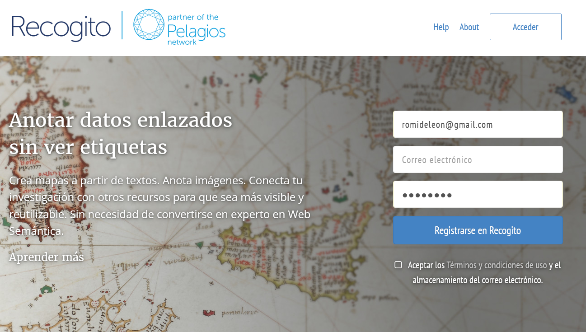
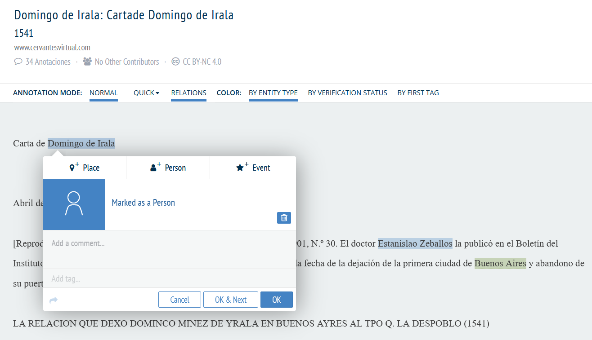
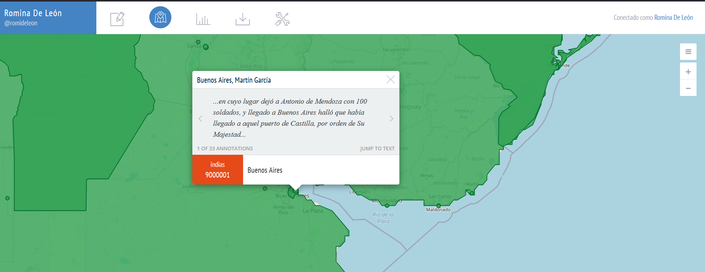
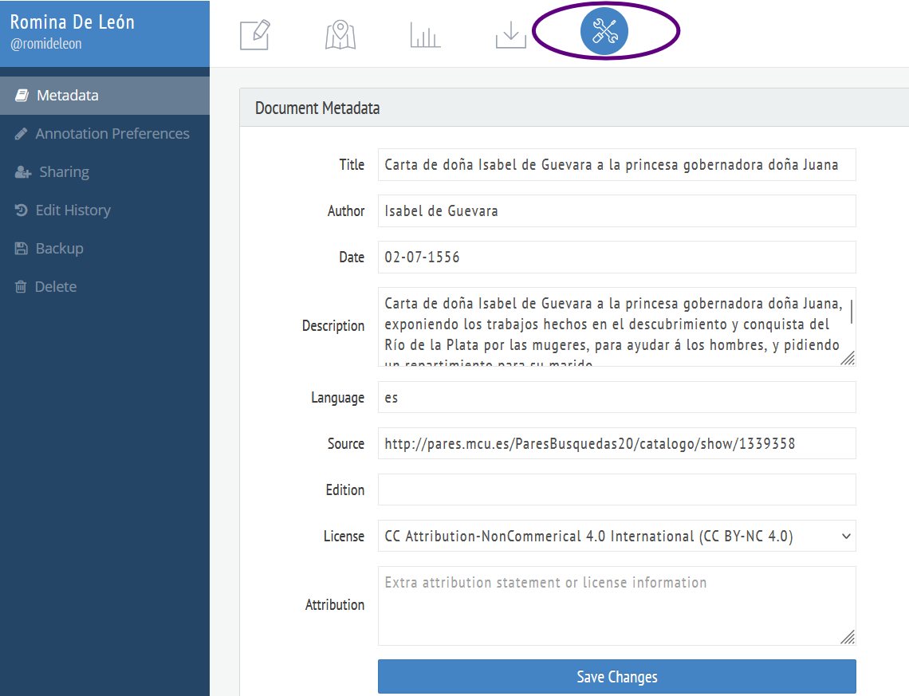
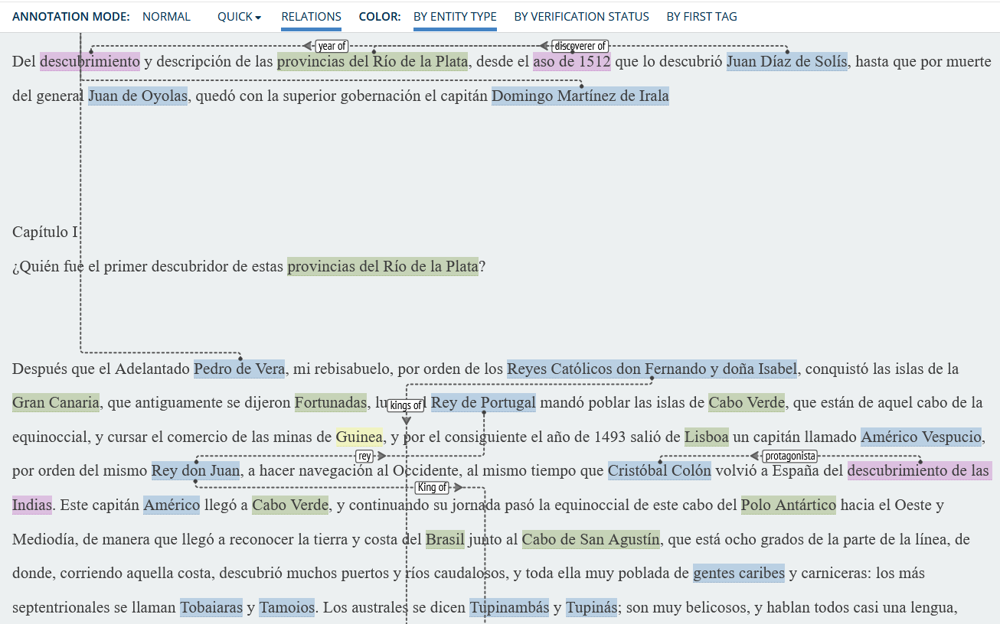
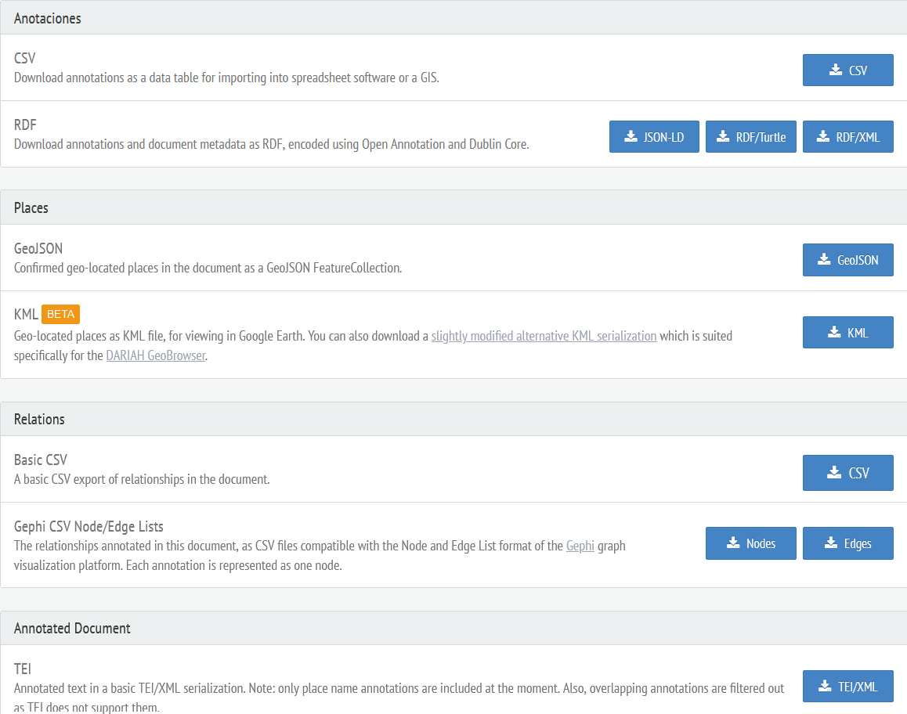
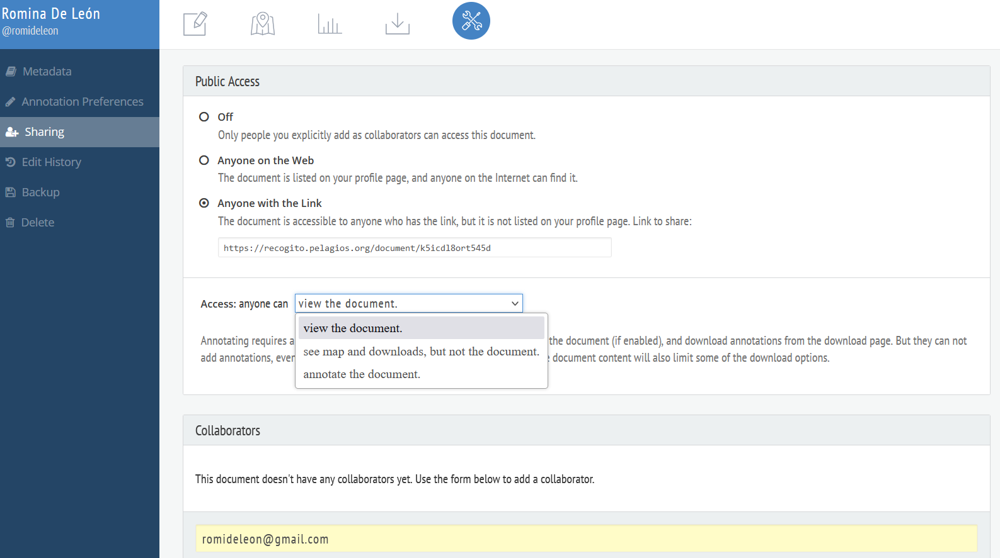

¿Qué es Recogito?
Recogito es una plataforma digital de anotación colaborativa de diversos tipos de documentos. Es alojada y mantenida por Pelagios Network, una iniciativa de Humanidades Digitales que busca fomentar recursos en línea que puedan documentar el pasado. Esta comunidad ofrece herramientas y recursos online que, por un lado, no necesitan conocimientos de programación, y por otro, brinda un trabajo en la nube, colaborativo y con múltiples formatos. Es por ello que la curva de aprendizaje de Recogito es mínima, pues resulta sencillo utilizarlo de forma autónoma.
Esta tecnología ha sido desarrollada en código abierto[1], por ello permite descargar una versión local desde GitHub, e incluso se puede añadir un diccionario geográfico según las necesidades del proyecto.
Recogito tiene como objetivo principal facilitar la creación de anotaciones geográficas, la vinculación de textos con ubicaciones específicas y la creación de redes de conocimiento a partir de documentos históricos. También, ofrece un espacio personal de trabajo donde se puede cargar, recopilar y organizar materiales fuentes, textos, imágenes y datos tabulares, y colaborar en anotaciones e interpretaciones.
 Pantalla de accesoLos primeros pasos para comenzar a trabajar son ingresar a la página web, registrar una cuenta, desde Register/Registrarse for/en Recogito, sólo será necesario correo electrónico y nombre de usuario. Este sitio está configurado en inglés, pero se encuentra traducido al español, alemán e italiano, entre otros. Además, es compatible con la mayoría de los navegadores. Luego del registro ya es posible comenzar a anotar.
Primeros pasos en Recogito
Una vez que tenemos una cuenta en la plataforma, podremos subir documentos o anotar en documentos que nos hayan compartido.
 Escritorio de usuarios en Recogito
Escritorio de usuarios en Recogito
Cómo subir documentos
Se pueden subir diversos tipos de documentos digitales (incluidos formatos de imagen):- Permite la creación de carpetas para una mejor organización de los archivos.
- Documentos de texto, en formato
*.txt.Si el documento a anotar se encuentra en otro formato de texto (por ejemplo, un .doc de Word o de otro procesador de texto), primero será necesario transformarlo al formato UTF-8 Unicode (con cualquier editor de texto, por medio de la opción “guardar como”). Luego exportar el archivo a *.txt, comprobando previamente que el formato de codificación sea UTF-8.
Pueden subirse múltiples textos al mismo tiempo, sin embargo, estos se agruparán en un nuevo documento de varios archivos. - Documentos en formato TEI-XML, actualmente Recogito permite la importación de documentos con este formato. Estos archivos poseen un marcado con etiquetas para codificar estructuras textuales.
- Relacionado a los documentos anteriores, se encuentra la importación de TEI desde la base de datos de CTS (Canonical Text Service) se ingresa a diversos repositorios que ofrecen dicho tipo de archivos.
- Datos tabulares, en formato de valores separados por comas (CSV).
- Imágenes en formatos .jpg, .tif, .png. Estas se pueden ampliar o reducir, pero, al igual que con los textos, no pueden editarse ni mejorar la calidad del archivo de origen. Incluso pueden cargarse varias imágenes juntas,pero no deben exceder el espacio de almacenamiento personal.
- Importar imágenes desde IIIF (International Image Interoperability Framework), pegando o arrastrando la URL del manifiesto IIIF. Este tipo de importaciones no afecta el espacio de almacenamiento.
- Importar textos codificados en XML-TEI desde el catálogo RISE (Research Infrastructure for the Study of Eurasia), que ofrece textos antiguos del Mediterráneo oriental.
Aclaración: Recogito no es un editor de texto, por lo cual no podrá realizar cambios en el texto una vez que se haya cargado.
 Sección de carga de documentos y creación de carpeta
Sección de carga de documentos y creación de carpetaAgregar metadatos
Luego de cargar un documento por primera vez, es recomendable completar la mayor cantidad de metadatos posibles. Información que corresponde a autor/es, título, fecha del texto, procedencia del formato digital, idioma, etc. Además, se deberá indicar la licencia, puesto que los documentos que se cargan, en forma predeterminada, serán visibles únicamente para quien los sube, si se desea compartirlos con otras personas, deberán completarse los permisos adecuados. Sólo se podrá compartir un documento si posee los derechos de autor o si está bajo una Licencia Creative Commons.Comenzar a anotar
Crear anotaciones en Recogito es simple y divertido, sólo se debe resaltar la palabra o las palabras en el texto que se desea anotar. Se abrirá una pequeña ventana emergente de anotación, se deberá asignar una categoría a su anotación: lugar, persona y evento. Se puede añadir comentario con información sobre la nota, así como etiquetas para identificar el tipo de palabra.
Ventana de anotación
Si seleccionamos Place (Lugar), Recogito tratará de desambiguar la anotación según los registros de autoridad o identificadores únicos de los diccionarios geográficos (gazetteers) disponibles de la plataforma.
Nota: si aparece de color naranja la ventana emergente, significa que el nombre debe ser desambiguado. Cuando se torna verde es que la coincidencia se validó. Recogito actualmente utiliza ocho diccionarios geográficos históricos, así como uno contemporáneo (Geonames). Por ello, se podrá elegir el registro de lugar que mejor se ajuste al sitio mencionado en el texto que se está anotando. Otra ventaja de alinear la anotación a un lugar con un registro, es que los gazetteers proporcionan otra información (como coordenadas), por lo cual Recogito generará automáticamente visualizaciones de las anotaciones de lugar en un mapa, como se puede observar en la siguiente figura.
Además, se observa que al pasar el mouse sobre un sitio particular se indicará referencia al texto anotado.
Asimismo, debe considerarse que al registrar personas o eventos, Recogito no podrá desambiguarlos por la ausencia de registros de autoridad de dichas entidades. Se recomienda, el uso de etiquetas (tags) y comentarios (comments) dentro de cada anotación, pues permite refinar más las notas realizadas, incluso pueden agregarse enlaces externos, como Wikidata o catálogos de museos.
Anotación automática (NER, Named Entity Recognition)Luego de cargar documentos, la plataforma ofrece la opción de generar anotaciones semiautomáticas, mediante un algoritmo de reconocimiento de entidades nombradas (NER) basado en los idiomas admitidos por Recogito así como el del texto a anotar. Este proceso analiza el texto e intenta identificar todas las palabras que puedan ser lugares o personas. Cuando reconoce un posible lugar, tratará de buscar una coincidencia automática con un registro de autoridad de los diccionarios geográficos disponibles. Este tipo de anotación será resaltada en color gris, por su coincidencia automática, pero deberá ser confirmada por el ojo humano, y se tornará verde.Anotar Relaciones en Recogito
Otro tipo interesante de anotaciones son las que se conocen como etiquetas relacionales. Estas crean conexiones entre dos o más anotaciones (de entidades) existentes. Para marcarlas se debe cambiar el modo de anotación a
relations. Luego hacer clic en la primera entidad anotada, y arrastrar el puntero a la segunda. Aparecerá una línea punteada que conecta las dos anotaciones, junto con un cuadro de texto, donde puede completarse una descripción o etiqueta de la relación. Esta línea cuenta con una flecha, que indica la dirección de dicha relación. Esto es fundamental porque las relaciones poseen jerárquicas, por ejemplo, "rey de" o "year of" (deben anotarse y etiquetarse en un mismo idioma). Estas relaciones podrán exportarse en formato de nodos y aristas y podrán visualizarse en aplicaciones de análisis de red (como Gephi).Anotación de imágenes
Este proceso es similar al anterior, solo diferencia en la naturaleza del documento, es decir una imagen. Provee una vista panorámica que permite navegación, rotación y acercar/alejar la imagen. Para ello se podrán marcar puntos, rectángulos y anotación inclinada, incluso cambiar los colores de anotación, para mejorar contraste y visibilidad. Además estas anotaciones serán georreferenciadas en los mapas de Recogito.Descarga de Datos
Recogito ofrece una gran ventaja al permitir descargar textos anotados, datos de anotaciones e imágenes en diferentes formatos que permitirán su almacenamiento, análisis, edición y visualización en otras aplicaciones. Algunos de ellos son CSV, JSON-LD, RDF-Tortle, RDF/XML, GeoJSon, KML, relaciones, etc.
Compartir datos y trabajo colaborativo
Como todas las herramientas pensadas para trabajar en Humanidades Digitales, Recogito permite la colaboración simultánea y asincrónica, habilitando la anotación de múltiples usuarios en un mismo documento. Se puede acceder a permisos y gestionarlos desde la sección Configuración en la barra de herramientas, habilitando una licencia del tipo Creative Commons. Allí se podrá elegir el acceso a cualquiera en la Web, a personas con enlace compartido o cerrado. Además, se podrá indicar si el acceso sólo es para visualizar el documento, habilitar descargas o permitir anotaciones. En la misma sección podrá compartir sus trabajos con usuarios específicos con privilegios de lectura, escritura o administración.
Metadatos en un documento
Vista de Recogito con anotaciones de lugares, eventos, personas y relaciones


Ejercicio
Hemos visto que Recogito es una herramienta muy versátil, amigable y con un continuo crecimiento y mantenimiento. Para poder interiorizarse con ella, les comparto un texto y una imagen donde podrán comenzar a anotar.
Cualquier inquietud no duden en escribirme!